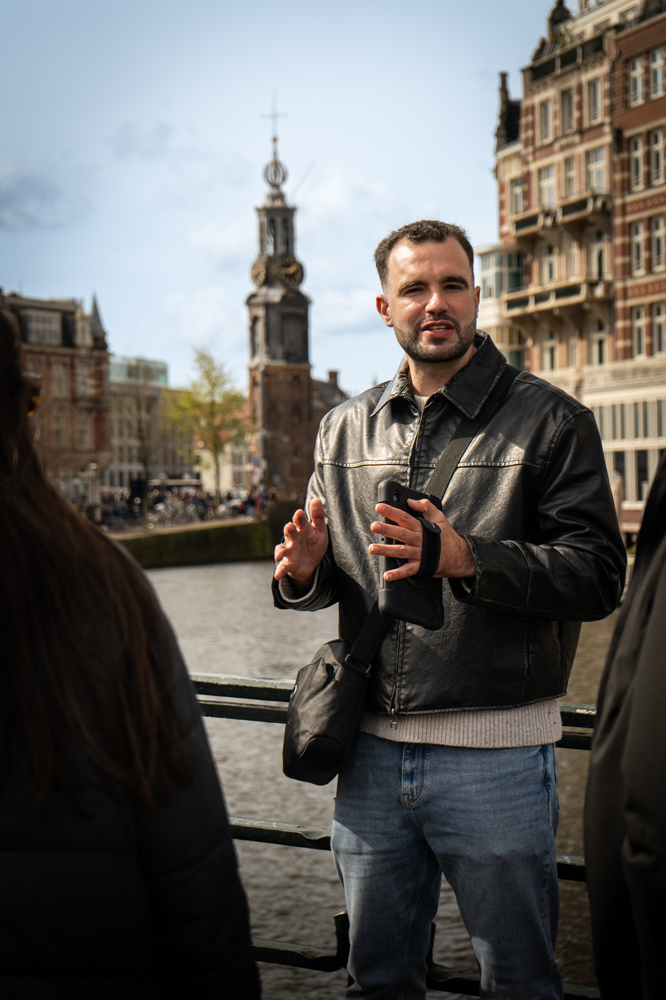

Pick a Tour
Lo imprescindible de Amsterdam
Una introducción dinámica a Ámsterdam a través de su historia, su cultura local y sus rincones imprescindibles.
- Duración: 2 horas
- Historia y secretos de Ámsterdam
- Cultura local y curiosidades
- Tour dinámico y entretenido
El barrio judio de amsterdam
La vida judía antes, durante y después de la ocupación.
- Duration: 2 hours
- Historia judía de Ámsterdam
- Segunda Guerra Mundial y memoria
- Historias de resistencia y supervivencia
Tour Privado
Una experiencia totalmente personalizada para descubrir Ámsterdam a tu ritmo con un guía local en español.
- Tour 100% personalizado
- Experiencia exclusiva y cercana
- Ámsterdam a tu ritmo
- Guía local en español

About me



Frequently Asked Questions
No FAQs contain that word.
¿En qué consiste el tour IMPRESCINDIBLE y qué lugares incluye?
El Tour Imprescindible por Ámsterdam te permitirá comprender la ciudad de forma completa desde el primer momento. Conocerás sus monumentos más emblemáticos, rincones históricos y paisajes perfectos para fotografías inolvidables. Te ubicarás en la ciudad mientras descubres su historia, su vida actual, curiosidades, gastronomía… ¡e incluso algunas palabras en neerlandés!
El recorrido comienza en Dam Square, el corazón de Ámsterdam. Desde allí caminaremos por Rokin, una de las avenidas principales, para adentrarnos en callejones históricos hasta llegar al Oude Gracht, el canal más antiguo de la ciudad. Bordearemos el Barrio Rojo, conoceremos los restos de la VOC (la primera bolsa de valores y la primera multinacional de la historia) y veremos las famosas casas barco y la Iglesia del Sur.
El tour continúa por el antiguo barrio judío y pasaremos frente a la Casa de Rembrandt. Luego visitaremos el área del Ayuntamiento y haremos fotos en el puente de Monet y en las icónicas casas bailarinas junto al río Amstel. Finalizaremos el recorrido en el pintoresco Mercado de las Flores, uno de los lugares más especiales y coloridos de Ámsterdam.
¿Cuál es la duración del tour?
La duración del tour es de 2 horas. Según el ritmo del grupo o las preguntas, puede extenderse hasta 30 minutos más, pero nunca superará ese tiempo adicional.
¿En qué idioma se realiza el tour?
El tour se realiza exclusivamente en español.
¿Dónde es el punto de encuentro y cómo identificar al guía?
El punto de encuentro es en la puerta del Grand Café Krasnapolsky (Plaza Dam, 9). El guía te esperará 10 minutos antes del inicio del tour sosteniendo un paraguas naranja fosforito.
¿El tour es apto para todas las edades?
Sí, el tour es apto para todas las edades, ya que durante la mayor parte del recorrido no se utiliza lenguaje obsceno ni se tratan temas relacionados con sexo o drogas.
Sin embargo, hay una excepción: en una de las paradas visitaremos el Barrio Rojo. En ese punto se empleará un lenguaje más adulto y se abordarán temas más delicados que pueden no ser apropiados para menores. Aun así, esta excepción no impide que un menor pueda asistir al tour; simplemente recomendamos discreción y la supervisión de un adulto durante esa parte del recorrido.
¿El recorrido es accesible para personas con movilidad reducida?
Sí, el tour se puede adaptar para personas en silla de ruedas o con movilidad reducida. A lo largo del recorrido hay distintos puntos donde es posible sentarse y descansar. También podemos modificar el itinerario para evitar zonas con escaleras y ajustar el ritmo del grupo si alguna persona mayor o con dificultad para caminar lo necesita. Nuestro objetivo es que todas las personas puedan disfrutar del tour de manera cómoda y segura.
¿Cuál es el precio del tour?
El precio del tour lo determina el propio cliente en función de su satisfacción al finalizar la experiencia. La aportación habitual oscila entre 10 y 50 euros. Por respeto al trabajo del guía, se establece una aportación mínima de 10 euros, ya que pagar menos se considera inapropiado para el valor del servicio ofrecido.
¿Qué incluye el tour?
- Un recorrido de 2 horas guiado por un profesional
- Explicaciones sobre la ciudad, su historia y sus lugares más importantes
- Toma de fotografías durante el tour
- Respuesta a todas las preguntas que los participantes deseen realizar
¿Cómo puedo realizar la reserva y con cuánta anticipación?
Puedes realizar la reserva haciendo clic AQUÍ. El proceso es muy sencillo: solo tienes que elegir el día, la hora y confirmar tu plaza. Durante la reserva también deberás proporcionar tus datos de contacto, para poder enviarte la confirmación y cualquier información relacionada con el tour. Puedes reservar con la anticipación que prefieras, siempre que haya disponibilidad para la fecha seleccionada.
¿Puedo cancelar o modificar mi reserva?
Sí, puedes cancelar tu reserva en cualquier momento. También permitimos cambios gratuitos y flexibles siempre que se soliciten con suficiente anticipación y haya disponibilidad en la nueva fecha u horario deseado.
¿Qué pasa si llego tarde o pierdo el grupo?
Antes del inicio del tour recibirás un mensaje vía WhatsApp al número que proporcionaste, confirmando la realización del tour. Ese mismo número también se utilizará al finalizar el recorrido para enviarte una lista de restaurantes y cualquier otra información que necesites. Si llegas tarde, solo debes ponerte en contacto con ese número y recibirás la ubicación en tiempo real del guía para unirte al grupo. De igual manera, si llegas a perder al grupo durante el tour, basta con enviar un mensaje al mismo número y se te proporcionará la ubicación actual del guía para que puedas reincorporarte.
¿Qué ropa o equipamiento recomiendan según el clima?
La recomendación depende de la época del año:
- Verano: Se aconseja ropa ligera y fresca, ya que el clima puede ser muy cálido y húmedo
- Invierno (noviembre a febrero): Es recomendable llevar varias capas de abrigo, ya que las temperaturas pueden ser bajas
Siempre recomendamos consultar el pronóstico del tiempo antes del tour para poder elegir la ropa más adecuada. Además, siempre es recomendable llevar ropa y calzado cómodos para disfrutar del recorrido con total comodidad.
¿El tour se realiza en caso de lluvia o mal clima?
Sí, en Ámsterdam llueve aproximadamente 220 días al año, por lo que el tour se realiza llueva, truene o nieve. Solo en casos de condiciones meteorológicas extremas que puedan poner en riesgo la seguridad del guía o de los participantes, podría cancelarse el tour como medida extraordinaria.
¿Se puede hacer el tour en grupo privado o personalizado?
Sí, es posible realizar un tour privado. Si estás interesado, visita esta página. Desde ahí podrás contarnos lo que buscas y organizaremos el recorrido para que sea una experiencia cómoda, exclusiva y adaptada a las necesidades de tu grupo.
¿Se permiten mascotas?
Sí, se pueden llevar mascotas al tour, pero es necesario solicitarlo con al menos 24 horas de antelación. Esto nos permite asegurarnos de que no haya participantes con objeciones. Si todos los participantes están de acuerdo, la mascota podrá unirse al recorrido.
¿Cómo llegar al punto de encuentro en transporte público o coche?
El punto de encuentro está en la Plaza Dam, muy bien comunicada mediante metro, tranvía, tren o autobús. Si vienes en coche, recomendamos el Parking Center Oosterdok, ubicado a unos 20 minutos a pie del punto de encuentro. Para utilizar este estacionamiento es necesario reservar con antelación.
¿Se aceptan tarjetas o solo efectivo/donación?
Sí, se acepta pago con tarjeta. También se pueden realizar pagos electrónicos mediante Bizum, Tikki o transferencia. Sin embargo, se prefiere el pago en efectivo al finalizar el tour.
¿Tienes otra pregunta que no aparece en esta lista?
Ponte en contacto con nosotros a través de WhatsApp, llamada o correo electrónico.
- Horario de atención: 10:00 a 18:00 (para llamadas o mensajes instantáneos)
Estaremos encantados de ayudarte y resolver cualquier duda que tengas.
Contacto: Pulsa aquí para contactarnos